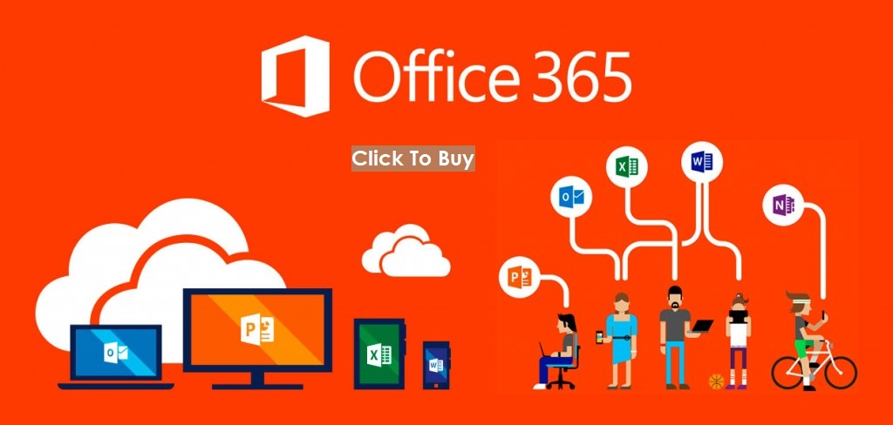

Windows
Office
Phone
About Us
Support
Windows
Office
Phone
About Us
Support
Office 365
Microsoft Office 365 now includes Office 2016 and gives you the full Microsoft Office experience. With access to the latest Office applications as well as other cloud-based productivity services, whether you need Office for home, school, or business, there is an Office 365 plan to meet your needs.
Our Office 365 subscription plans include Office 365 Home, Office 365 Personal, Office 365 University and Office 365 for Mac. With each plan, you can install the 2016 versions of Word, Excel, PowerPoint, Outlook, and OneNote (Access, and Publisher are also included only for PC users). When a new version of Microsoft Office is released, you’ll get instant access to it so your applications are always up-to-date - and because Office 365 is optimised across your devices it's easy to get anywhere access to your stuff on your laptop, phone, tablet and more.
Along with the latest software, you'll also get 1TB of OneDrive cloud storage, which lets you keep documents in one place, and access them anywhere on any device, making it easier than ever to create, edit, and share your documents on the go. Best of all, you can get tech support from the Microsoft Answer Desk experts, by phone or chat - at no extra charge.
Office 365 Home lets you install Office on up to 5 PCs or Macs, as well as 5 Windows, Android, or iPad tablets - an ideal solution for homes with more than one user. See the latest Microsoft Office 365 subscriptions, and do more everywhere.
